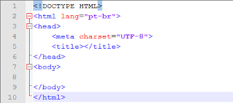

Tudo começou com o Mark I em 1944, era um computador muito grande ocupando um espaço enorme para comportar sua estrutura física e servia basicamente para fazer calculos um pouco mais complexos para a sua época. Durante o período da segunda gerra mundial sugiram ainda o Colossus e o Eniac para calculos balisticos.
Apartir daí os computadores começaram a evoluir em seu tamanho e funcionalidades, surgiram os transistores e capacitores que proporcionaram a criação de circuitos integrados levando a uma redução consideravel no tamanho das maquinas. Hoje temos micro-processadores que com o avanço da tecnologia e anos de pesquisa e desenvolvimento os computadores cabem basicamente na palma de nossas mão e possibilitam realizar tarefas com muito mais eficácia.
voltarBasicamente o termo Clients se refere aos usuarios, aqueles que consomem a informação de algum local através da conecção via web. Tais usuarios buscam arquivos sejam HTML, CSS, JavaScript, Imagens, etc...através da comunicação com o servidor na web onde ficam armazenados esses arquivos.
Já no que se refere Servers são maquinas mais robustas onde ficam armazenados uma quantidade significativa de arquivos em seu banco de dados.
Tipos de Servidores
De modo básico a estruta de um HTML consiste em três partes:
Conforme imagem abaixo:
A principal diferença está na maneira como os itens são apresentados. Nas listas ordenadas os itens são enumerados, já nas listas não ordenadas os elementos são classificados por marcadores.
Confira outros exemplos de listas ordenadas e não ordenadas clicando aqui.
voltar